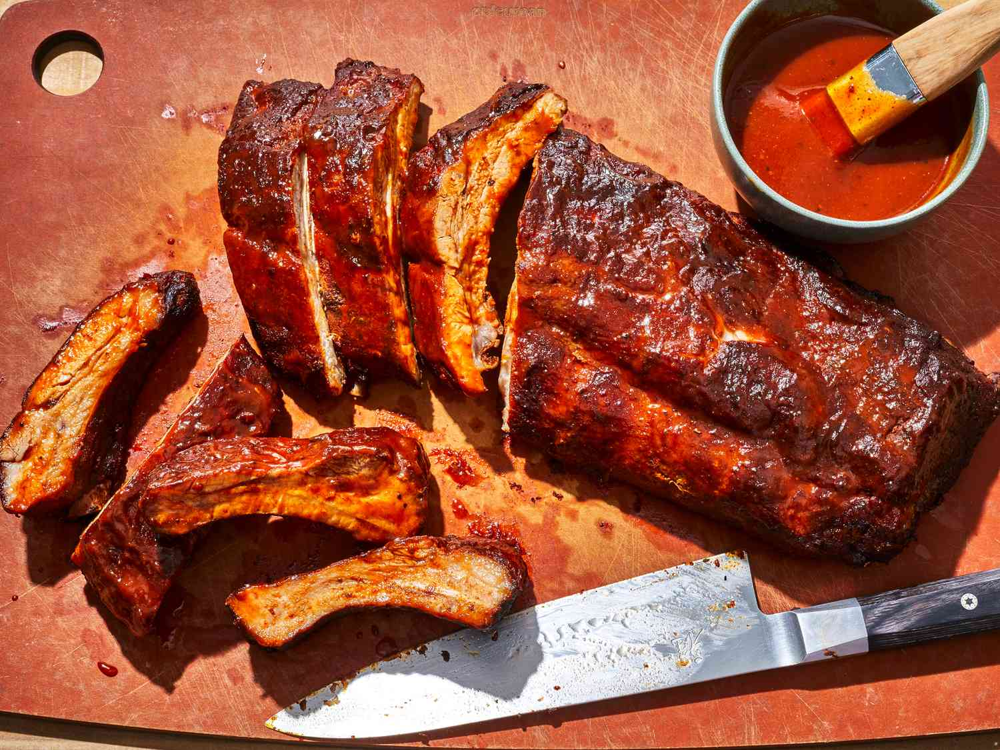

Tonkatsu

Description
Learning how to cook ribs on the grill may take a little time and patience, but the process couldn’t be easier!
Just coat the ribs in the spice rub, wrap them in foil, and stick them on the grill.
They cook over indirect heat for about two hours before finishing over the flames. Whether you opt for a charcoal grill or a gas grill is your choice!
Either way, they'll be smoky, tender, and charred, and to give them a sticky-sweet flavor, we've basted them with a glaze of barbecue sauce.
Feel free to make your own barbecue sauce or use a store-bought sauce to make things even easier.
Then, serve them up with your favorite barbecue sides—think coleslaw, potato salad, corn on the cob, and Ree's Best-Ever Baked Beans—for the ultimate summer cookout menu.
Ingredients
FOR THE SPICE RUB:
- 1/4 c. light brown sugar
- 2 tbsp. smoked paprika
- 1 1/2 tsp. onion powder
- 1 1/2 tsp. garlic powder
- 1 1/2 tsp. kosher salt
- 1 tsp. ground black pepper
- 1/2 tsp. ground cayenne pepper (optional)
FOR THE GRILLED RIBS:
- 2 racks baby back ribs (about 5 to 6 pounds total)
- 3 tbsp. vegetable oil, plus more for oiling the grates
- 1/2 c. chicken stock
- 1/4 c. apple cider vinegar
- 1 1/2 c. BBQ sauce, plus more to serve
Instructions
-
Preheat a grill (charcoal or gas) to 300˚, with the coals or flames only under one half of the grill.
-
For the spice rub: Mix the brown sugar, smoked paprika, onion powder, garlic powder, salt, black pepper, and cayenne (if using) in a small bowl.
-
Place the rack of ribs on a large sheet tray and remove the membrane from the underside of the ribs. Rub the vegetable oil all over both sides of the ribs, then sprinkle evenly with the spice rub.
-
Place the ribs on the sheet tray, with the curves of the bones facing down. Add the chicken stock and vinegar to the tray. Wrap the tray tightly with aluminum foil and place on the grill over the side with no coals/flame. Cook over indirect heat until the internal temperature of the ribs reads 180˚ to 190˚, about 90 minutes to 2 hours. (Alternatively, you can bake these ribs in a 300° oven.)
-
Increase the grill temperature to 375˚ and oil the grill grates well. Transfer the ribs directly over the grill grates and brush the tops with the BBQ sauce. Cover and cook for 5 minutes. Carefully turn the ribs over and baste the other side with the BBQ sauce. Cover again and cook for an additional 5 minutes. Continue basting and turning the ribs until the BBQ sauce has created a sticky coating and the ribs are charred in spots, 10 to 20 minutes longer.
-
Transfer the ribs to a cutting board, brush with any remaining sauce, cut into pieces and serve.
Return to main page